Plotting examples
The examples below show how pyClim can be used to make plots. The examples do not cover the whole functionalities of pyClim, but a subset of the most important plotting features. This documentation will be updated progressively to include the remaining functionalities.
All of the examples below make use of the example dataset included in this package, which the user can use for testing purposes.
Loading the example data
The first step for plotting is, of course, to load the data:
import numpy as np
import matplotlib.pyplot as plt
import matplotlib
import pandas as pd
import datetime as dt
from pandas import Grouper, DataFrame
import os
import glob
from scipy import stats, interpolate, signal
# Import pyclim
import numpy as np import matplotlib import pandas as pd import datetime as dt
import os
# Import pyclimair from pyclimair.common import (
quality_control, compute_climate, compute_daily_records_oneyear, compute_records, plot_records_count, compute_and_plot_exceedances, plot_variable_trends, plot_data_vs_climate, plot_data_vs_climate_withrecords, plot_data_vs_climate_withrecords_multivar, plot_periodstats, plot_data_and_accum_anoms, plot_data_and_annual_cycle, plot_timeseries, timeseries_extremevalues, plot_annual_cycles, get_annual_cycle, annual_meteogram, plot_accumulated_anomalies, plot_anomalies, compare_probdist, categories_evolution, threevar_windrose, threevar_windrose_trend, threevar_windrose_probability
)
- from pyclimair.air import (
annual_meteogram_with_pollutant
)
- from pyclimair.clim import (
compare_with_globaldataset
)
- from pyclimair.utils import(
get_continuous_cmap
)
# Load the example data path = “%s/data/” % os.getcwd() csvfiles = glob.glob(os.path.join(path, “example_data.txt”)) print(csvfiles)
# Create metadata metadata = pd.DataFrame([“example”, “example”, 361.00, -361.00, 461]).T metadata.columns = [“Estacion”, “Codigo”, “latitud_OK”, “longitud_OK”, “Altitud”]
# Some useful variables year_to_plot = 2025 climate_normal_period = [1991, 2020] variables = [“Tmin”, “Tmean”, “Tmax”, “Rainfall”, “WindSpeed”] database = “Example”
# Mapping variables units_list = {} # [‘ºC’,’ºC’,’ºC’, ‘m/s’] units_list[“Tmin”] = “ºC” units_list[“Tmean”] = “ºC” units_list[“Tmax”] = “ºC” units_list[“Rainfall”] = “mm” units_list[“WindSpeed”] = “m/s”
- wd_map = {
“N”: 0, “NNE”: 22.5, “NE”: 45, “ENE”: 67.5, “E”: 90, “ESE”: 112.5, “SE”: 125, “SSE”: 147.5, “S”: 180, “SSW”: 202.5, “SW”: 225, “WSW”: 247.5, “W”: 270, “WNW”: 292.5, “NW”: 315, “NNW”: 337.5,
}
# Select metadata metadatos_sta = metadata[metadata.ID == “example”] codigo_sta = metadatos_sta.ID.values[0] # nombres_mod[listanombres] = nombres_mod[listanombres].replace(‘/’,’-‘) station_name = str(metadatos_sta.Name.values[0]) station_name = station_name.replace(“/”, “-“)
plotdir = os.path.join(os.getcwd(), “plots/%s/%s” % (database, “example”)) plotdir = plotdir.replace(”\”, “/”) if os.path.isdir(plotdir) == False:
- try:
os.mkdir(plotdir)
- except OSError:
print(“Creation of the directory %s failed” % plotdir)
- else:
print(“Successfully created the directory %s “ % plotdir)
# Read data input_file = [x for x in csvfiles if codigo_sta in x][0] df1 = pd.read_csv(input_file, sep=”;”, decimal=”,”, header=0, encoding=”latin-1”)
df1[“Date”] = pd.to_datetime(df1.iloc[:, 0]) df1 = df1.set_index(“Date”)
df1[“Day”] = df1.index.day df1[“Month”] = df1.index.month df1[“Year”] = df1.index.year df1[“Accumpcp”] = df1.groupby(df1.index.year)[“Rainfall”].cumsum()
Plotting a timeseries of anomalies
The ‘freq’ parameter allows to choose the temporal aggregation of the anomalies. For example, for daily anomalies use freq=’1D’:
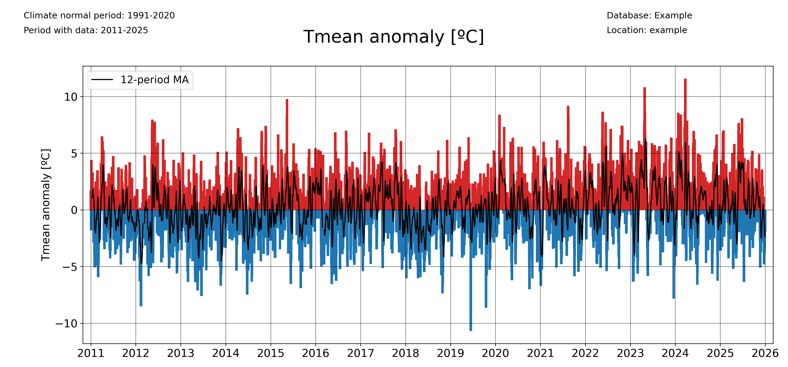
plot_anomalies(
df1_complete,
"Tmean",
"ºC",
climate_normal_period,
database,
station_name,
plotdir + "/daily_anomalies_Tmean.png",
window=12,
freq="1D",
)
And for monthly anomalies, freq=’1ME’:
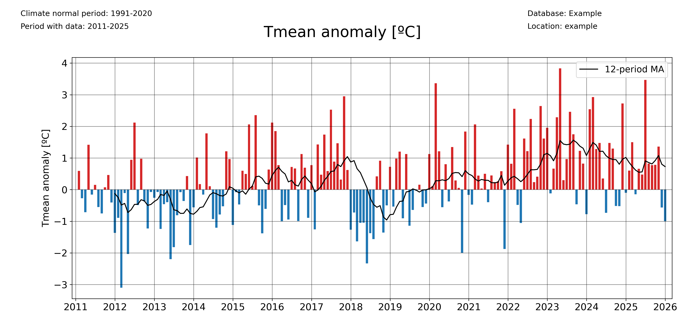
plot_anomalies(
df1_complete,
"Tmean",
"ºC",
climate_normal_period,
database,
station_name,
plotdir + "/monthly_anomalies_Tmean.png",
window=12,
freq="1ME",
)
Plotting accumulated anomalies
Use the pyclim.common.plot_accumulated_anomalies() function to plot the accumulated anomalies during a year. Again, the ‘freq’ parameter allows the user to vary the temporal aggregation of the accumulated anomalies.
Accumulated anomalies from day to day:
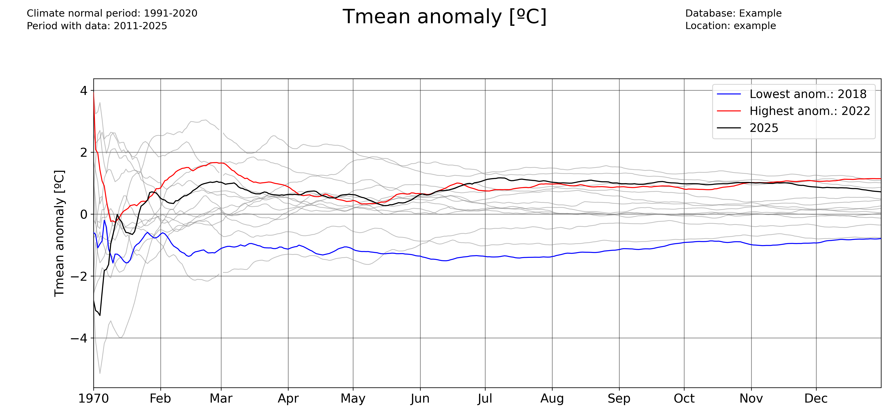
plot_accumulated_anomalies(
df1_complete,
"Tmean",
"ºC",
2025,
climate_normal_period,
database,
station_name,
plotdir + "/Tmean_accum_anoms_daily.png",
freq="1D",
)
Weekly accumulated anomalies:
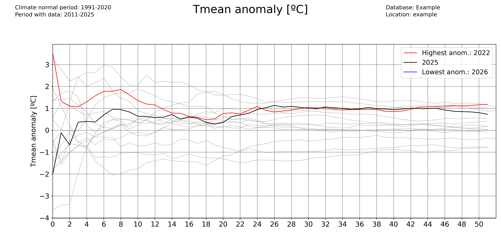
plot_accumulated_anomalies(
df1_complete,
"Tmean",
"ºC",
2025,
climate_normal_period,
database,
station_name,
plotdir + "/Tmean_accum_anoms_daily.png",
freq="1D",
)
Monthly accumulated anomalies:
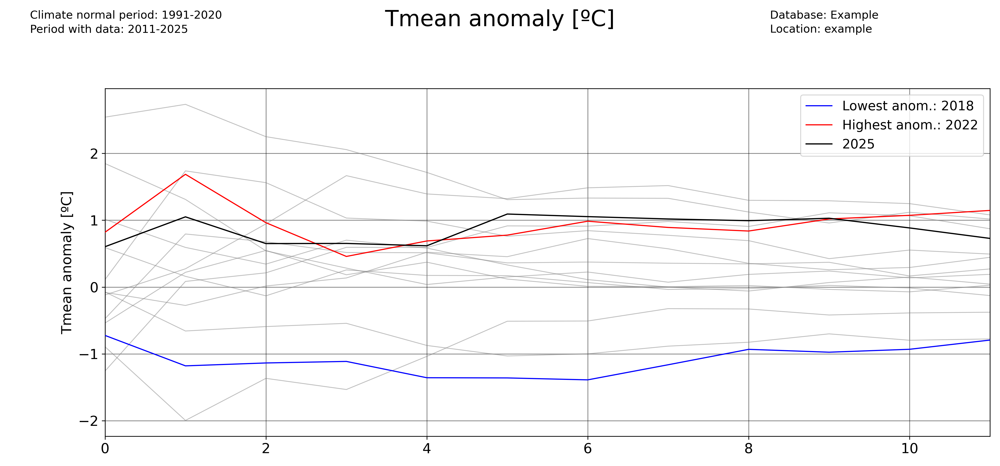
plot_accumulated_anomalies(
df1_complete,
"Tmean",
"ºC",
2025,
climate_normal_period,
database,
station_name,
plotdir + "/Tmean_accum_anoms_daily.png",
freq="1D",
)
Computing and plotting record values
For computing the record values, use the pyclim.common.compute_daily_records() function. Then, one can plot the evolution of the number of high and low records with pyclim.common.plot_records_count(). The following example illustrates how to compute and plot the number of days in each year exceeding a daily record.
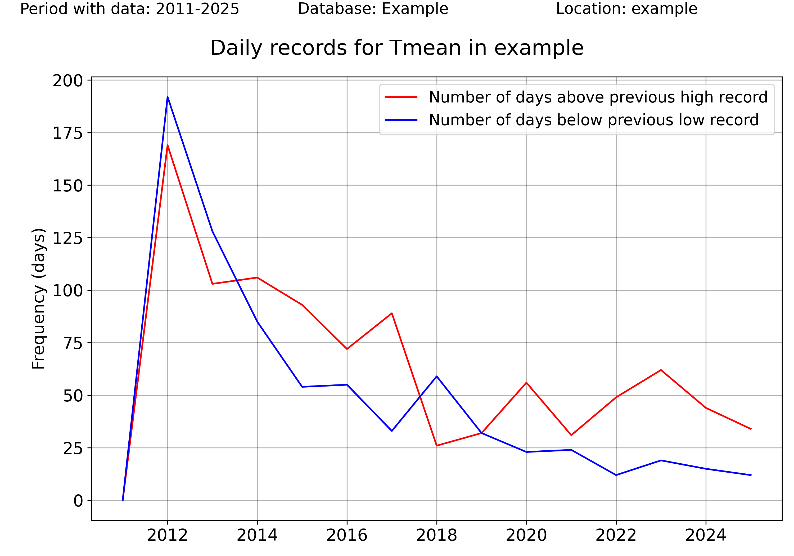
# Plot data from a certain period versus the climatological normal
records_df_allvars = pd.DataFrame()
for i in range(
len(
sorted(
list(set(df1_complete.columns) & set(variables)),
key=lambda x: variables.index(x),
)
)
):
variable = sorted(
list(set(df1_complete.columns) & set(variables)),
key=lambda x: variables.index(x),
)[i]
units = units_list[variable]
enddate = datetoday
# plot data
plot_data_vs_climate(
df1_complete,
climate_df_sep,
variable,
units,
ndaysago,
enddate,
cmap_anom_bars,
database,
climate_normal_period,
station_name,
plotdir + "/%speriodtimeseries_climatemedian19912020.png" % variable,
kind="bar",
fillcolor_gradient=False,
)
multiyearrecords_df_allvars = (
pd.DataFrame()
) # For saving multiple variable records' DataFrames
varis = ["Tmax", "Tmean", "Rainfall"]
units_varis = []
for i in range(len(varis)):
units_varis.append(units_list[varis[i]])
multiyearrecords_df = compute_daily_records(
df1_complete, varis[i], df1_complete.index.year.unique()
) # Compute records for variable
multiyearrecords_df_allvars = pd.concat(
[multiyearrecords_df_allvars, multiyearrecords_df], axis=1
)
# Plot annual records
plot_records_count(
multiyearrecords_df_allvars,
"Tmean",
database,
station_name,
plotdir + "/annual_records_Tmean.png",
freq="day",
) # Plot number of days exceeding daily records
Once more, the user can set the temporal frequency of the records’ aggregation using the ‘freq’ argument. In version 0.0.1, accepted values are ‘day’ (for daily records), ‘month’ for monthly records, and ‘year’ for absolute records.
plot_records_count(
multiyearrecords_df_allvars,
"Tmean",
database,
station_name,
plotdir + "/annual_records_Tmean.png",
freq="month",
) # Plot number of days exceeding daily records
Plotting data versus the climatological normal values
One interesting functionality of the pyClimAir package is the ability to plot data versus its climatological normal values, including the occurrence of record values given that a DataFrame including records is provided.

colors_anom_bars = ["#34b1eb", "#eb4034"]
levels_anom_bars = [0, 1]
cmap_anom_bars = get_continuous_cmap(
colors_anom_bars, levels_anom_bars, 2
) # Only works with HEX colors
# Plot data from a certain period versus the climatological normal
variable = "Tmean"
units = "ºC"
inidate = dt.datetime(2025, 1, 1)
enddate = dt.datetime(2025, 12, 31)
# Without records
plot_data_vs_climate(
df1_complete,
climate_df_sep,
variable,
units,
inidate,
enddate,
cmap_anom_bars,
database,
climate_normal_period,
station_name,
plotdir + "/%speriodtimeseries_climatemedian19912020.png" % variable,
kind="bar",
fillcolor_gradient=False,
)
# With records
plot_data_vs_climate_withrecords(
df1_complete,
climate_df_sep,
multiyearrecords_df_allvars,
"Tmean",
"ºC",
inidate,
enddate,
cmap_anom_bars,
database,
climate_normal_period,
station_name,
plotdir + "/%stimeseries_climatemedian19912020_withrecords.png" % varis[i],
kind="bar",
fillcolor_gradient=False,
)
Classify data by categories
Another visual way to represent the evolution of your data is to classify them by categories and then see the evolution of the occurrency of each category. This is done in pyClim with the pyclim.common.categories_evolution() function.
The user can see the evolution of each category, grouped by their monthly, seasonal and yearly occurrences. If no categories’ labels are given, the script computes the labels from the given categories. An example is shown below:
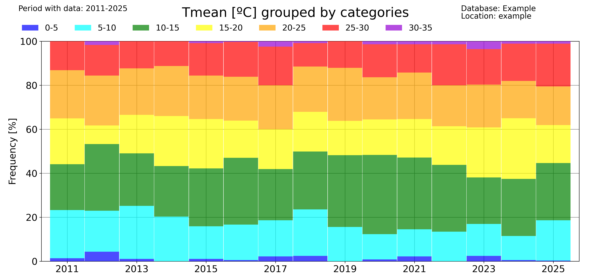
# Categorize data
categories = [0, 5, 10, 15, 20, 25, 30]
colors = ["blue", "cyan", "green", "yellow", "orange", "red"]
categories_evolution(
df1_complete,
"Tmean",
"ºC",
categories,
[],
colors,
database,
station_name,
plotdir + "/categories_Tmean_default.png",
time_scale="year",
)
The ‘time_scale’ parameter allows to modify the temporal aggregation of the data:
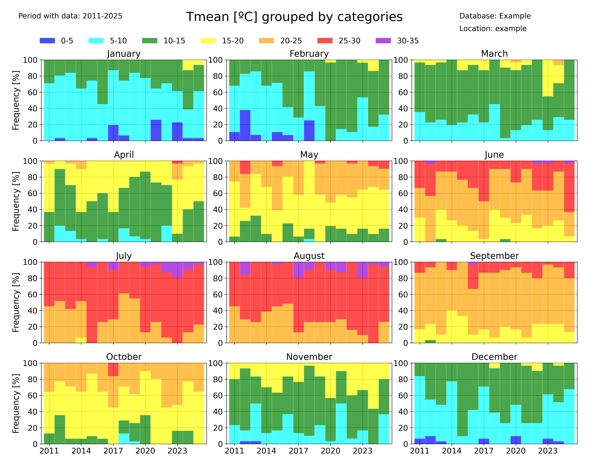
categories_evolution(
df1_complete,
"Tmean",
"ºC",
categories,
[],
colors,
database,
station_name,
plotdir + "/categories_Tmean_month_default.png",
time_scale="month",
)
Identifying trends in a dataset
pyClimAir also allows you to rapidly identify trends in a dataset. Several functions allow to do that.
The pyclim.common.plot_variable_trends() function, plots the time evolution of a certain variable. It also plots the mean value of each ‘averaging_period’ periods. The ‘grouping’ argument controls the temporal frequency of the variable aggregation, and the ‘grouping_stat’ controls the statistic to be plotted. It can be set to ‘mean’, if the user wants to know the temporal evolution of the average value of a variable, or to ‘sum’ (to see the evolution of the accumulated value of a variable, for example the total rainfall).
The optional argument ‘alldatamean’, which is set to True by default, allows to plot the average value of all the analysed period.
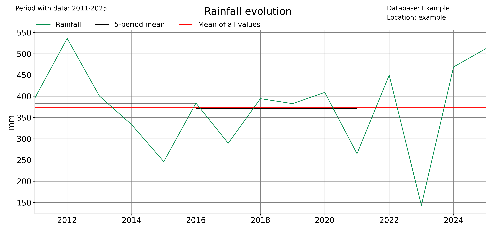
# Evolution of the mean value of a variable
plot_variable_trends(
df1_complete,
var,
units,
database,
station_name,
plotdir + "/%s_withmean.png" % var,
averaging_period=5,
grouping="year",
grouping_stat="mean",
rain_limit=1,
)
# Evolution of the accumulated value of a variable
plot_variable_trends(
df1_complete,
var,
units,
database,
station_name,
plotdir + "/%s_sum_withmean.png" % var,
averaging_period=5,
grouping="year",
grouping_stat="sum",
rain_limit=1,
)
Another function that allows to identify trends is the pyclimair.common.timeseries_extremevalues() function, which allows the user to plot the evolution of extreme values of a given variable. As usual, the user can control the time discretization of the extreme values. Below, an example for annual and seasonal values is given.
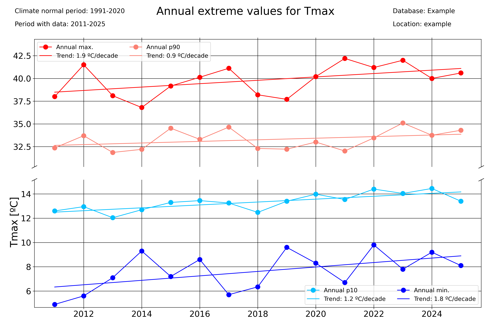
### Seasonal plots
var = "Tmax"
units = "ºC"
# Extreme values
timeseries_extremevalues(
df1_complete,
var,
units,
climate_normal_period,
database,
station_name,
plotdir + "/Annualextremevalues_%s_lines.png" % var,
time_scale="Year",
)
timeseries_extremevalues(
df1_complete,
var,
units,
climate_normal_period,
database,
station_name,
plotdir + "/seasonalextremevalues_%s_lines.png" % var,
time_scale="season",
)
Period averages
Use the pyclim.common.plot_periodaverages() function to plot the evolution of the mean or median value of a variable between two days. In the example below, the evolution of the daily mean temperature between June 1st (included) and September 1st (not included) is plotted:

### Plot median value of a certain period for every year with data
for var in ["Tmean"]:
units = units_list[var]
plot_periodaverages(
df1_complete,
climate_df_sep,
var,
units,
dt.datetime(2025, 6, 1),
dt.datetime(2025, 9, 1),
station_name,
database,
plotdir + "%speriodaverages.png" % var,
stat="median",
window=10,
)
Meteograms
pyClimAir also offers the possibility of displaying data in form of a meteogram. A meteogram is a graphical presentation of one or more meteorological variables with respect to time. pyClim offers to construct a meteogram using Temperature, Rainfall and Wind Speed data, as showed in the example below. In pyClimAir, the meteogram shows, for each variable, a comparison of the given year data with the climatological normal values (provided that a DataFrame with the climate normal values is given). If the “plot_anoms” parameter is set to True, the values of the given year are represented as departures from the climatological normal values, as in this example.
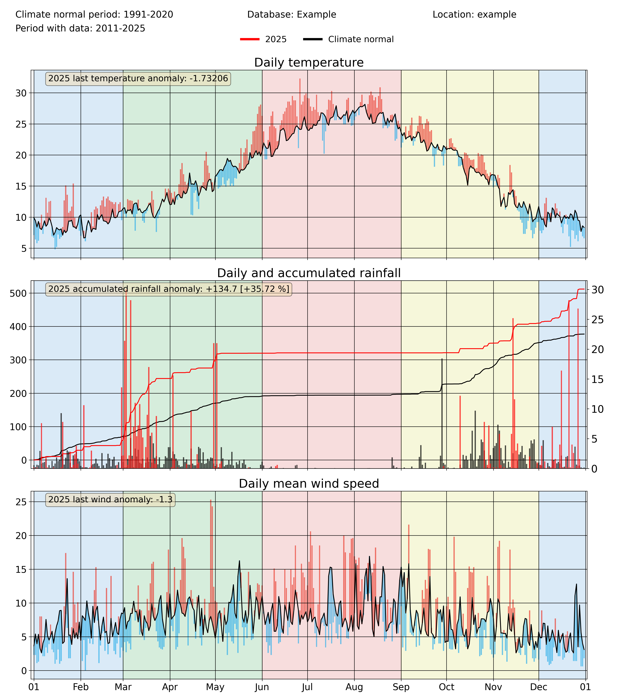
annual_meteogram(
df1_complete,
climate_df_sep,
year_to_plot,
climate_normal_period,
database,
station_name,
plotdir + "/%i_meteogram_bars.png" % year_to_plot,
plot_anoms=True,
)
Since version 1.0.0, pyClimAir allows to include a fourth variable in the meteograms, with the aim of comparing the temporal evolution of air pollutants with relevant meteorological variables. This capability is included in pyclimair.air.annual_meteogram_with_pollutant():
annual_meteogram_with_pollutant(
df1_complete,
climate_df_sep,
2023,
'O3',
climate_normal_period,
database, station_name,
plotdir+'/2023_meteogram_withpols_inside.png',
plot_anoms=False,
pol_subplot=False
)
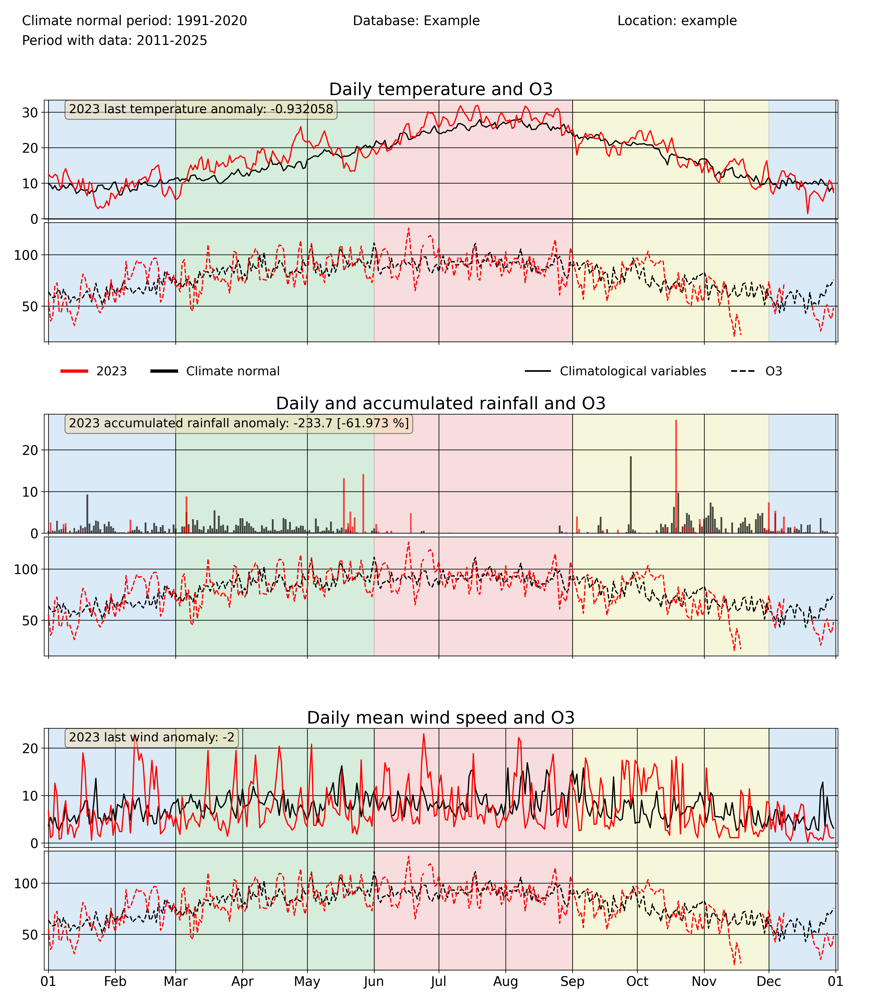
Comparing probability distributions
A capability introduced in version 1.0.0 is the function pyclimair.common.compare_probdist(), which allows to compare the probability distribution of a certain period with that of a climatological reference period. Three options are given to the user in terms of the plot type: histogram, Cumulative Distribution Function (CDF) and both. The example below shows the result for the latter case. As in other pyClimAir functionalities, this function allows for yearly, seasonal and monthly aggregations.
compare_probdist(
df1_complete, df_normalclimate,
[-5,0,5,10,15,20,25,30,50], 'Tmax', 'ºC',
climate_normal_period, database, station_name,
plotdir+'/Tmax_probdist.png', dist_type='histogram'
)
3-variable polar plots: variable, trends and probabilities
An exciting new group of functionalities of pyClimAir is the creation of three-variable polar plots, which allows to visualize several statistics of a given variable as a function of wind speed and direction. This group of functionalities is composed of three functions, each of them performing an specific task:
With the function pyclimair.common.threevar_windrose() the used can easily visualize the (mean or median) values of a given variable for different wind speeds and directions. Moreover, the function pyclimair.common.threevar_windrose_trend() allows to compute the linear trend of a given variable as a function of wind speed and direction. Finally, the pyclimair.common.threevar_windrose_probability() computes the probability of a variable meeting a given condition as a function of wind speed and direction.
All of these three functions accept as argument the “grouping_freq” parameter which, as in other functions of pyclimair, controls the temporal frequency of the data aggregation, so wind-dependencies can be analysed for yearly, monthly or seasonal values.
A set of representative examples of each one of these three functions are shown below:
threevar_windrose(
df1_complete, ['WindSpeed','WindDir','Tmin'], climate_normal_period,
'ºC', database, station_name, plotdir+'/3var_windrose_Tmin_pct.png',
grouping_freq='year', grouping_stat='mean'
)
threevar_windrose_trend(
df1_complete, ['WindSpeed','WindDir','Tmin'], climate_normal_period,
'ºC', database, station_name, plotdir+'/3var_windrose_Tmin_pct.png',
grouping_freq='season', grouping_stat='mean'
)
threevar_windrose_probability(
df1_complete, ['WindSpeed','WindDir','Tmin'], '>20',
climate_normal_period, 'ºC', database, station_name,
plotdir+'/3var_probwindrose_Tmin_month_step1.png',
grouping_freq='month', cmap=cmap_probability
)
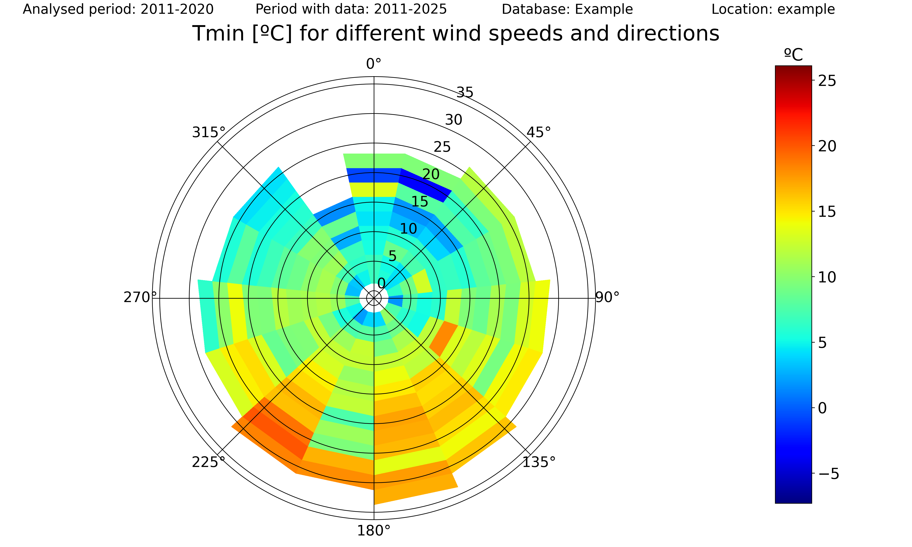
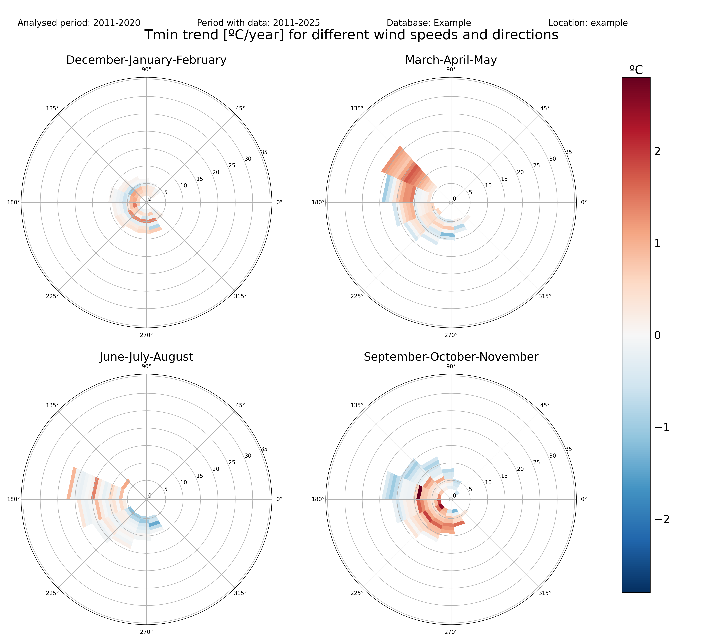
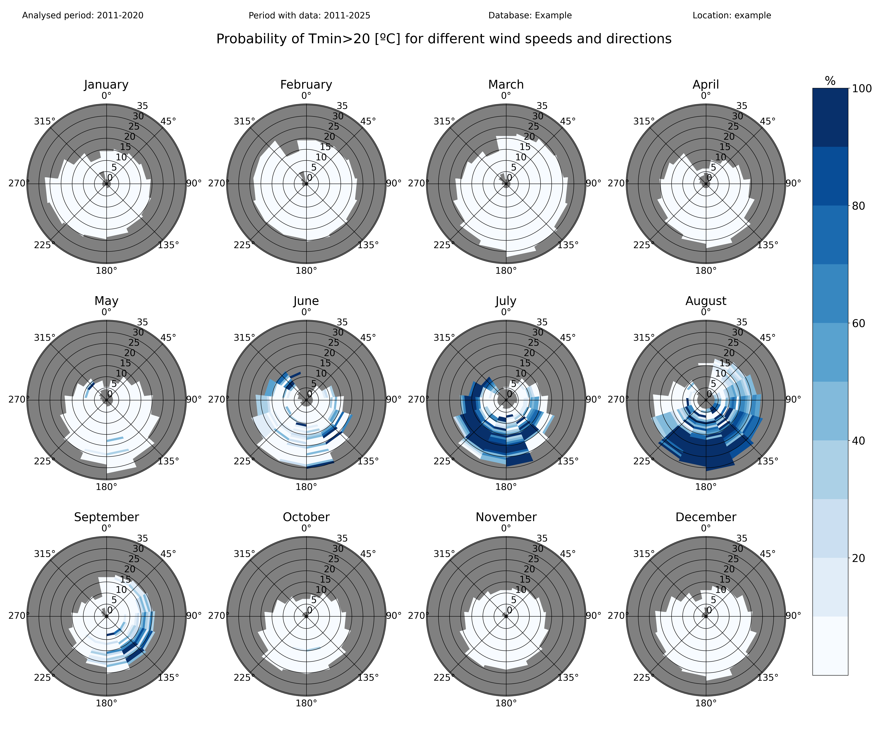